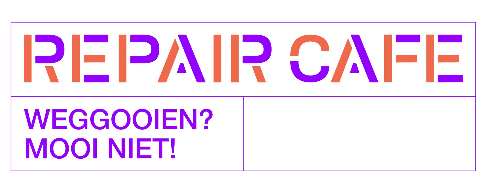

Wij zijn nu een enthousiaste groep van 6 vrijwilligers. En we zoeken extra vrijwilligers om het team compleet te maken, zodat alle spullen die we ter reparatie aangeboden krijgen ook kunnen repareren.
Deze spullen kun je bij ons ter reparatie aanbieden: Stofzuigers, koffiemachines, tosti-apparaten, broodroosters, strijkijzers, lampen, laptops, printers, speelgoed, naaimachines en (tuin)gereedschappen. Mocht je iets missen breng het gerust mee, als we het kunnen repareren doen we dat graag. En voegen we het toe aan bovenstaand lijstje.
Je bent welkom in ons Repaircafé in Gorredijk. Je vindt ons in de bibliotheek in Gorredijk, Schansburg 1, 8401 RX, Gorredijk.
